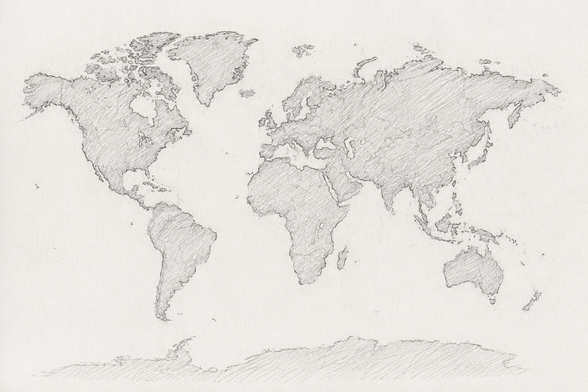

<!DOCTYPE html>
<html lang="ko">
<head>
<meta charset="UTF-8" />
<meta name="viewport" content="width=device-width, initial-scale=1.0" />
<title>다로움 · Daroum — From Jeju, to the children of the world</title>
<script crossorigin src="https://unpkg.com/react@18/umd/react.production.min.js"></script>
<script crossorigin src="https://unpkg.com/react-dom@18/umd/react-dom.production.min.js"></script>
<script src="https://unpkg.com/@babel/standalone/babel.min.js"></script>
<script src="https://cdn.tailwindcss.com"></script>
<link rel="preconnect" href="https://fonts.googleapis.com">
<link rel="preconnect" href="https://fonts.gstatic.com" crossorigin>
<link href="https://fonts.googleapis.com/css2?family=Cormorant+Garamond:ital,wght@0,300;0,400;0,500;1,300;1,400&family=Inter:wght@300;400;500&family=Nanum+Myeongjo:wght@400;700;800&family=Noto+Serif+KR:wght@300;400;500;600&display=swap" rel="stylesheet">
<style>
  :root {
    --paper:     #F1ECDF;
    --paper-2:   #ECE5D2;
    --ink:       #1E1B14;
    --graphite:  #3A372F;
    --mute:      #4F4738;       /* 더 진하게 — 작은 글씨 가독성 */
    --mute-soft: #7E7766;       /* 기존 톤이 필요한 곳에 */
    --hair:      rgba(30,27,20,0.18);
    --accent:    #6D7A5E;     /* muted sage, very sparing */
    --warm:      #A86E4B;     /* soft terracotta, very sparing */
  }
  html, body { background: var(--paper); color: var(--ink); }
  body {
    font-family: 'Inter', 'Noto Serif KR', sans-serif;
    font-weight: 300;
    -webkit-font-smoothing: antialiased;
    letter-spacing: 0.005em;
  }
  .serif   { font-family: 'Cormorant Garamond','Nanum Myeongjo', serif; }
  .serif-k { font-family: 'Nanum Myeongjo','Noto Serif KR', serif; }
  .sans    { font-family: 'Inter','Noto Serif KR', sans-serif; }

  /* 종이 텍스처 */
  .paper {
    background-color: var(--paper);
    background-image:
      radial-gradient(rgba(30,27,20,0.04) 1px, transparent 1px),
      radial-gradient(rgba(30,27,20,0.025) 1px, transparent 1px);
    background-size: 3px 3px, 7px 7px;
    background-position: 0 0, 1px 2px;
  }
  .paper-soft { background-color: var(--paper-2); }

  .ink   { color: var(--ink); }
  .mute  { color: var(--mute); }
  .hair  { border-color: var(--hair); }
  .accent { color: var(--accent); }

  /* 세로 라이팅 캡션 */
  .small-caps {
    text-transform: uppercase;
    letter-spacing: 0.28em;
    font-size: 11px;
    font-weight: 600;        /* 좀 더 굵게 */
    color: var(--graphite);  /* 진한 그레이 기본 */
  }
  .small-caps.mute { color: var(--mute); }  /* mute일 때만 약간 옅게 */
  .section-label {              /* 섹션 안 작은 라벨 — 더 또렷하게 */
    text-transform: uppercase;
    letter-spacing: 0.24em;
    font-size: 11.5px;
    font-weight: 700;
    color: var(--ink);
  }

  /* 가는 헤어라인 구분선 */
  hr.rule { border: none; border-top: 1px solid var(--hair); margin: 0; }

  /* 인용 행 */
  .lede {
    font-family: 'Cormorant Garamond','Nanum Myeongjo', serif;
    font-weight: 400;
    font-style: italic;
    color: var(--graphite);
  }

  /* 부드러운 fade-up 진입 */
  @keyframes fadeUp { from { opacity:0; transform: translateY(14px);} to { opacity:1; transform:none;} }
  .fade-up   { animation: fadeUp .9s ease-out both; }
  .delay-1   { animation-delay: .15s; }
  .delay-2   { animation-delay: .35s; }
  .delay-3   { animation-delay: .6s;  }
  .delay-4   { animation-delay: .9s;  }
  .delay-5   { animation-delay: 1.2s; }

  /* 매우 미니멀한 링크 */
  .underline-thin {
    background-image: linear-gradient(currentColor, currentColor);
    background-position: 0 100%;
    background-repeat: no-repeat;
    background-size: 100% 1px;
    padding-bottom: 1px;
  }

  /* 미니멀 버튼 */
  .btn-line {
    display: inline-block;
    padding: 12px 24px;
    border: 1px solid var(--ink);
    border-radius: 0;
    background: transparent;
    color: var(--ink);
    font-size: 12px;
    letter-spacing: 0.25em;
    text-transform: uppercase;
    transition: background .2s ease, color .2s ease;
  }
  .btn-line:hover { background: var(--ink); color: var(--paper); }
  .btn-ink {
    display: inline-block;
    padding: 12px 24px;
    border: 1px solid var(--ink);
    background: var(--ink);
    color: var(--paper);
    font-size: 12px;
    letter-spacing: 0.25em;
    text-transform: uppercase;
    transition: background .2s ease, color .2s ease;
  }
  .btn-ink:hover { background: transparent; color: var(--ink); }

  /* 살짝 떠오르는 인덱스 번호 */
  .index-num {
    font-family: 'Cormorant Garamond', serif;
    font-style: italic;
    font-weight: 300;
    color: var(--mute);
  }

  /* 프로그램 카드 호버 */
  .prog-card { transition: background .25s ease; }
  .prog-card:hover { background: var(--paper-2); }

  /* 스크롤 인디케이터 */
  @keyframes scrollHint {
    0%, 100% { transform: translateY(0); opacity: .35; }
    50%      { transform: translateY(6px); opacity: 1; }
  }
  .scroll-hint { animation: scrollHint 2s ease-in-out infinite; }

  /* 연필 그림자 효과 */
  .pencil-soft { filter: drop-shadow(0 1px 0 rgba(30,27,20,0.12)); }

  ::-webkit-scrollbar { width: 8px; height: 8px; }
  ::-webkit-scrollbar-thumb { background: rgba(30,27,20,0.2); }
  ::-webkit-scrollbar-track { background: transparent; }

  /* 한국어 일부 텍스트는 Noto Serif KR로 */
  .ko-serif { font-family: 'Noto Serif KR','Nanum Myeongjo', serif; font-weight: 400; }

  /* ========== 새 인터랙션: Jeju 펄스 + 펼침 ========== */

  /* 제주를 누르고 싶게 — 부드러운 두 겹 펄스 링 */
  @keyframes pulseRing {
    0%   { transform: scale(1);   opacity: 0.55; }
    80%  { opacity: 0; }
    100% { transform: scale(4);   opacity: 0; }
  }
  .pulse-ring {
    animation: pulseRing 2.4s cubic-bezier(.2,.6,.4,1) infinite;
    will-change: transform, opacity;
  }
  @keyframes jejuBob {
    0%, 100% { transform: translate(-50%, -50%) scale(1); }
    50%      { transform: translate(-50%, -50%) scale(1.08); }
  }
  .jeju-bob { animation: jejuBob 2.4s ease-in-out infinite; }

  /* 제주에서 펼쳐지는 (원형 클립이 열림) / 다시 접힘 */
  @keyframes jejuUnfold {
    from { clip-path: circle(0% at var(--jx) var(--jy)); }
    to   { clip-path: circle(180% at var(--jx) var(--jy)); }
  }
  @keyframes jejuFold {
    from { clip-path: circle(180% at var(--jx) var(--jy)); }
    to   { clip-path: circle(0% at var(--jx) var(--jy)); }
  }
  /* 호버 시 라벨 살짝 진해짐 */
  .jeju-btn:hover .jeju-label { background: rgba(241,236,223,1); color: var(--ink); }
</style>
</head>
<body class="paper">
<div id="root"></div>

<script type="text/babel">
const { useState, useEffect, useRef } = React;

/* =====================================================
   데이터
===================================================== */
// 이미지 속 위치 그대로의 순서: 왼쪽(검은 옷) 예인 · 가운데 민재 · 오른쪽 유라
const FOUNDERS = [
  {
    name: "예인", role: "Stage · 연극·연출",
    note: "활자를 무대 위 목소리와 몸짓으로 옮기는 일을 맡습니다.",
  },
  {
    name: "민재", role: "Editorial · 문헌 각색",
    note: "고전과 동시대 문학을 아이의 호흡으로 다시 옮겨 적습니다.",
  },
  {
    name: "유라", role: "Pedagogy · 교육 설계",
    note: "한 권의 책이 한 학기의 수업이 되도록 길을 만듭니다.",
  },
];

const PROGRAMS = [
  {
    n: "I",
    title: "인류연대기",
    sub: "Chronicles of Humankind",
    desc:
      "불의 사용, 농경의 시작, 문자의 탄생부터 디지털 시대까지. 인류가 걸어온 긴 길을 아이의 첫 호흡에 맞춰 다시 풀어 적은 챕터북 시리즈와 워크숍.",
    items: ["챕터북 8권", "교사용 가이드", "주말 워크숍"],
  },
  {
    n: "II",
    title: "문학 이야기",
    sub: "Literary Companion",
    desc:
      "동·서양 고전과 동시대의 좋은 이야기들을 아이의 언어로 옮겨 짧은 낭독집과 그림책으로 엮습니다. 작가, 시인과의 작은 만남을 함께 운영합니다.",
    items: ["낭독집 시리즈", "그림책 협업", "작가 초대 모임"],
  },
  {
    n: "III",
    title: "연극이 된 책",
    sub: "Book on Stage",
    desc:
      "읽은 책을 무대로 옮깁니다. 대본 각색, 소품 제작, 연출까지 아이들이 함께 참여하는 작은 극단 프로젝트. 매 학기 한 편의 무대.",
    items: ["희곡 각색", "어린이 극단", "공연 워크숍"],
  },
  {
    n: "IV",
    title: "제주 아카이브",
    sub: "Jeju, in Their Voices",
    desc:
      "본부가 있는 제주의 사람과 풍경, 옛이야기를 아이들의 글과 그림으로 모읍니다. 매년 한 권의 작은 책으로 묶어 도서관에 기증합니다.",
    items: ["연 1권 발간", "할머니 인터뷰", "지역 도서관 기증"],
  },
];

const TIMELINE = [
  { year: "2026 봄",  title: "다로움, 제주에서 시작",
    body: "예인 · 민재 · 유라가 제주에서 처음 모여 작은 책상 위 기획안을 펼친 날." },
  { year: "2026 여름", title: "첫 챕터북 [불을 만난 날]",
    body: "인류연대기 시리즈의 첫 책이 100부 인쇄되어 동네 도서관 두 곳에 놓였습니다." },
  { year: "2026 가을", title: "주말 인류연대기 교실",
    body: "제주시와 서귀포에서 격주 토요일, 90분짜리 첫 워크숍이 열렸습니다." },
  { year: "2026 겨울", title: "첫 무대 [씨앗을 심은 사람들]",
    body: "낭독에서 출발한 짧은 연극이 30분 분량으로 무대에 올랐습니다." },
  { year: "2027 봄",  title: "자매학교 결연 · 마닐라 · 타이베이",
    body: "영어판 워크숍 키트가 제작되어 필리핀 · 대만 두 도시의 학교에서 첫 수업이 시작됩니다." },
];

// 좌표는 worldmap.png 위의 백분율 (0~100). 제주(HQ)는 PencilMap과 동일.
const CITIES = [
  { name: "제주",        x: 80.2, y: 41.8, hq: true, lead: true },
  { name: "마닐라",      x: 78.0, y: 53.0,  partner: true, country: "필리핀" },
  { name: "타이베이",    x: 78.5, y: 45.5,  partner: true, country: "대만" },
  { name: "서울",        x: 80.0, y: 39.0 },
  { name: "도쿄",        x: 85.0, y: 41.0 },
  { name: "방콕",        x: 72.0, y: 54.0 },
  { name: "뉴델리",      x: 62.5, y: 47.5 },
  { name: "런던",        x: 48.0, y: 32.0 },
  { name: "베를린",      x: 52.0, y: 32.5 },
  { name: "뉴욕",        x: 25.0, y: 40.0 },
  { name: "샌프란시스코", x: 12.0, y: 41.0 },
  { name: "상파울루",    x: 32.0, y: 67.0 },
  { name: "시드니",      x: 89.0, y: 71.0 },
];

/* =====================================================
   연필이 그리는 세계지도 (오프닝)
===================================================== */
// 거친 해안선 — 콜럼버스 시대 지도처럼 들쭉날쭉하게.
// 멕시코만, 플로리다, 이베리아, 아프리카의 뿔, 아라비아 반도, 인도 반도 등 특징을 반영.
const CONTINENT_PATHS = [
  // North America — 알래스카 · 캐나다 · 멕시코만 · 플로리다 · 바하 캘리포니아
  "M 78 108 C 86 96 100 86 116 82 C 134 78 152 78 170 82 C 188 86 204 92 218 102 C 232 110 244 122 248 136 C 252 148 246 158 238 162 C 232 165 232 172 238 175 C 245 178 250 184 252 192 C 254 200 250 208 244 212 C 238 215 232 212 228 215 C 224 220 230 228 236 234 C 242 240 244 248 240 252 C 234 256 226 252 220 248 C 213 242 208 236 204 232 C 196 232 196 240 200 246 C 204 252 198 256 192 254 C 184 250 178 244 172 240 C 162 240 152 244 142 246 C 132 247 124 244 120 238 C 116 230 122 224 118 218 C 112 212 104 206 98 198 C 92 188 86 178 84 168 C 82 158 78 150 78 140 C 78 130 76 120 78 108 Z",

  // Greenland — 작은 섬, 위쪽
  "M 312 72 C 326 66 344 68 354 76 C 362 84 360 96 350 102 C 338 106 326 102 318 94 C 312 86 310 78 312 72 Z",

  // South America — 북쪽 부풀음 + 남쪽 좁아짐
  "M 216 246 C 232 240 252 244 266 252 C 280 260 290 274 292 290 C 294 305 288 320 284 332 C 282 344 280 356 276 366 C 270 376 262 380 254 380 C 248 378 244 370 244 360 C 244 348 246 336 244 324 C 240 310 234 296 228 282 C 222 270 217 258 216 246 Z",

  // Europe — 이베리아 · 이탈리아 · 발칸의 들쭉날쭉함
  "M 354 116 C 366 108 380 105 396 108 C 410 110 424 114 438 116 C 448 118 454 124 456 132 C 456 138 446 142 436 142 C 426 142 416 144 408 146 C 404 152 408 158 404 162 C 400 165 394 162 392 156 C 388 152 380 154 374 152 C 364 150 358 142 356 134 C 354 128 352 122 354 116 Z",

  // Africa — 서아프리카 부풀음 + 좁아지는 남단 + 아프리카의 뿔
  "M 402 175 C 416 170 432 172 446 178 C 460 184 470 195 474 208 C 478 220 476 232 478 244 C 488 248 492 252 488 258 C 480 260 472 256 468 262 C 466 274 462 286 458 296 C 454 306 446 314 438 316 C 430 316 424 308 422 298 C 418 286 414 274 412 262 C 408 248 405 232 404 218 C 402 205 400 192 402 175 Z",

  // Asia — 아라비아 반도, 인도 반도, 중국 동해안, 시베리아까지
  "M 458 100 C 478 92 506 86 536 90 C 568 94 600 100 628 108 C 654 116 678 124 698 136 C 712 146 720 158 716 168 C 710 178 696 184 682 186 C 668 188 654 184 640 186 C 628 196 624 208 624 218 C 626 224 624 230 618 230 C 612 228 610 220 610 212 C 608 204 600 202 590 204 C 580 206 572 214 568 224 C 564 234 560 242 554 240 C 548 236 552 226 550 218 C 548 210 540 208 530 212 C 520 218 512 226 506 228 C 500 226 504 218 506 210 C 510 200 510 192 502 188 C 492 184 482 178 476 168 C 470 156 468 142 466 128 C 464 116 460 106 458 100 Z",

  // SE Asia / Indonesia — 무너진 섬 느낌
  "M 610 224 C 624 220 640 222 654 228 C 670 234 684 240 692 250 C 696 258 686 264 674 263 C 660 262 648 256 636 250 C 624 244 616 236 612 230 C 610 226 610 224 610 224 Z",

  // Australia — 남쪽으로 살짝 비스듬하게
  "M 692 322 C 708 314 730 316 750 322 C 766 328 778 336 776 348 C 772 358 758 362 740 362 C 722 362 706 358 696 350 C 690 344 690 334 692 326 C 692 324 692 322 692 322 Z",
];

/* =====================================================
   Jeju 펼침 패널 — 지도에서 클릭 시 펼쳐지는 화면
===================================================== */
function JejuPanel({ jx, jy, onClose }) {
  const [closing, setClosing] = useState(false);
  const handleClose = () => {
    setClosing(true);
    setTimeout(onClose, 520);
  };

  // ESC로 닫기
  useEffect(() => {
    const h = (e) => { if (e.key === 'Escape') handleClose(); };
    window.addEventListener('keydown', h);
    return () => window.removeEventListener('keydown', h);
  }, []);

  return (
    <div
      className="fixed inset-0 z-50 paper overflow-y-auto"
      style={{
        '--jx': `${jx}%`,
        '--jy': `${jy}%`,
        animation: closing
          ? 'jejuFold 520ms cubic-bezier(.5,0,.6,1) forwards'
          : 'jejuUnfold 900ms cubic-bezier(.3,0,.2,1) forwards',
      }}
    >
      <div className="max-w-4xl mx-auto px-6 py-12 md:py-20">
        <button
          onClick={handleClose}
          className="text-[12px] small-caps mute underline-thin hover:text-ink transition"
        >
          ← 지도로 돌아가기
        </button>

        <div className="mt-14 md:mt-24">
          <div className="small-caps mute">A dream that began in Jeju</div>
          <h2 className="serif text-4xl md:text-6xl lg:text-7xl leading-[1.12] ink mt-5" style={{fontWeight:400}}>
            제주에서 시작된<br/>
            <span className="italic">우리들의 꿈</span><span className="mute">....</span>
          </h2>
        </div>

        {/* 셋의 모습 — 펜화 인물 */}
        <figure className="mt-14 md:mt-16">
          <div className="border hair p-3 md:p-4 inline-block w-full max-w-3xl mx-auto" style={{borderColor:'var(--hair)', background:'rgba(255,255,255,0.4)'}}>
            
          </div>
          <figcaption className="mt-4 text-center small-caps mute">
            예인 &nbsp;·&nbsp; 민재 &nbsp;·&nbsp; 유라 &nbsp;—&nbsp; pencil, MMXXVI
          </figcaption>
        </figure>

        <p className="mt-14 ko-serif text-[16px] md:text-[17px] leading-[2] max-w-3xl" style={{color:'var(--graphite)'}}>
          바다 너머가 더 잘 보이는 곳이 있습니다. 제주에는 매주 토요일,
          작은 책상 셋이 마주 보고 앉습니다. 그 책상 위에서 우리는
          인류가 걸어온 긴 이야기를, 사람들이 오래 사랑해 온 문학을,
          그리고 무대로 옮겨질 한 장면을 아이의 첫 호흡에 맞춰
          다시 적어 내려갑니다.
        </p>

        <hr className="rule my-16"/>

        <div className="section-label">셋이서, 함께</div>
        <div className="mt-10 grid sm:grid-cols-3 gap-x-10 gap-y-12">
          {FOUNDERS.map(f => (
            <div key={f.name}>
              <div className="serif text-3xl md:text-4xl ink" style={{fontWeight:500}}>{f.name}</div>
              <div className="small-caps mt-3" style={{color:'var(--graphite)'}}>{f.role}</div>
              <p className="ko-serif text-[14px] leading-[1.95] mt-5" style={{color:'var(--graphite)'}}>
                {f.note}
              </p>
            </div>
          ))}
        </div>

        <hr className="rule my-16"/>

        <div className="grid md:grid-cols-2 gap-x-14 gap-y-12">
          <div>
            <div className="section-label">우리가 하려는 일</div>
            <p className="mt-6 ko-serif text-[15px] leading-[2]" style={{color:'var(--graphite)'}}>
              인류의 시간, 좋은 문학, 그리고 무대 — 우리는 이 세 갈래의
              이야기를 아이가 처음 만나는 책으로 옮깁니다. 우리가 만든
              책과 워크숍과 공연의 수익은 다시 더 어린 친구들과 더 멀리
              있는 도서관으로 돌아갑니다. 이 작은 흐름이 언젠가 세계의
              다른 책상 위에도 닿기를 바랍니다.
            </p>
          </div>
          <div>
            <div className="section-label">왜 제주인가</div>
            <p className="mt-6 ko-serif text-[15px] leading-[2]" style={{color:'var(--graphite)'}}>
              섬에서 보는 세계가 더 넓다는 것을 우리는 압니다.
              바람 부는 돌담과 바다 사이의 작은 작업실은 매주
              새 한 페이지가 시작되는 자리. 제주는 오랫동안
              이야기들이 모이는 곳이었고, 그 자리에 우리도
              한 권의 책을 보태려고 합니다.
            </p>
          </div>
        </div>

        <hr className="rule my-16"/>

        <div className="grid md:grid-cols-3 gap-x-10 gap-y-8">
          {[
            { n:"I.",  t:"인류연대기",   d:"인류의 긴 시간을 아이의 첫 호흡으로." },
            { n:"II.", t:"문학 이야기",  d:"오래 사랑받은 책을 다시 옮겨 적기." },
            { n:"III.",t:"연극이 된 책", d:"읽은 책이 무대 위 한 장면이 되는 일." },
          ].map(x => (
            <div key={x.t} className="border-t pt-6" style={{borderColor:'var(--hair)'}}>
              <div className="index-num text-2xl" style={{color:'var(--graphite)'}}>{x.n}</div>
              <div className="serif text-xl ink mt-2" style={{fontWeight:500}}>{x.t}</div>
              <p className="ko-serif text-[14px] leading-[1.9] mt-3" style={{color:'var(--graphite)'}}>
                {x.d}
              </p>
            </div>
          ))}
        </div>

        <div className="mt-16 flex flex-wrap gap-3">
          <button onClick={handleClose} className="btn-ink">아래로 둘러보기</button>
          <button onClick={handleClose} className="btn-line">닫기</button>
        </div>

        <div className="mt-20 text-center small-caps mute">
          — Daroum · Ex Jeju · MMXXVI —
        </div>
      </div>
    </div>
  );
}

/* =====================================================
   연필이 그리는 세계지도 (이미지 reveal + Jeju 인터랙션)
===================================================== */
function PencilMap({ onComplete }) {
  const [phase, setPhase] = useState("drawing"); // drawing → arrived → opened
  const [imgOK, setImgOK] = useState(true);

  // 지도 위에서 제주의 위치 (이미지 가로/세로 백분율)
  // 한반도 남서쪽 바다 — 제주
  const JX = 77.5;
  const JY = 44;

  // 좌표 보조 표시 (제주 위치 미세조정용)
  const [hoverPos, setHoverPos] = useState(null);
  const mapBoxRef = useRef(null);
  const handleMapMove = (e) => {
    const r = mapBoxRef.current && mapBoxRef.current.getBoundingClientRect();
    if (!r) return;
    setHoverPos({
      x: (((e.clientX - r.left) / r.width) * 100).toFixed(1),
      y: (((e.clientY - r.top) / r.height) * 100).toFixed(1),
    });
  };

  useEffect(() => {
    const t = setTimeout(() => {
      setPhase("arrived");
      onComplete && onComplete();
    }, 5200);
    return () => clearTimeout(t);
  }, [onComplete]);

  const arrived = phase !== "drawing";

  return (
    <section className="paper min-h-screen flex flex-col">
      <div className="max-w-6xl w-full mx-auto px-6 pt-8 flex items-center justify-between text-[11px] tracking-[0.32em] mute uppercase">
        <span>Daroum · 다로움 · A.D. MMXXVI</span>
        <span className="hidden sm:inline">Ex Jeju · 33.5° N, 126.5° E</span>
      </div>

      <div className="flex-1 flex items-center">
        <div className="max-w-6xl w-full mx-auto px-6 py-10">
          <div className="relative w-full">
            <div
              ref={mapBoxRef}
              className="relative w-full"
              style={{aspectRatio: '1542 / 1024'}}
              onMouseMove={handleMapMove}
              onMouseLeave={() => setHoverPos(null)}
            >

              {/* 좌표 표시 (제주 위치 미세조정용 보조 — 마우스를 지도에 올리면 좌표가 보입니다) */}
              {hoverPos && arrived && (
                <div
                  className="absolute z-20 text-[10px] tracking-widest mute pointer-events-none"
                  style={{
                    bottom: 8, right: 10,
                    background: 'rgba(241,236,223,0.85)',
                    padding: '3px 7px',
                    border: '1px solid var(--hair)',
                    fontFamily: 'Inter, monospace',
                  }}
                >
                  x: {hoverPos.x} &nbsp; y: {hoverPos.y}
                </div>
              )}

              {/* 지도 이미지 — 왼→오 reveal */}
              {imgOK && (
                 setImgOK(false)}
                  className="absolute inset-0 w-full h-full object-contain select-none"
                  draggable="false"
                  style={{
                    clipPath: arrived ? 'inset(0 0 0 0)' : 'inset(0 100% 0 0)',
                    transition: 'clip-path 5s cubic-bezier(.4,0,.6,1)'
                  }}
                />
              )}

              {/* 이미지 없을 때 안내 */}
              {!imgOK && (
                <div className="absolute inset-0 flex items-center justify-center text-center p-8 border border-dashed" style={{borderColor:'var(--hair)'}}>
                  <div>
                    <div className="serif italic text-xl" style={{color:'var(--graphite)'}}>
                      지도 이미지를 추가해 주세요
                    </div>
                    <div className="text-[12px] mute leading-relaxed mt-3">
                      업로드하신 세계지도 PNG를 아래 이름으로 같은 폴더에 저장:<br/>
                      <code className="inline-block mt-2 px-2 py-1 paper-soft" style={{background:'var(--paper-2)'}}>worldmap.png</code>
                    </div>
                  </div>
                </div>
              )}

              {/* 연필 — 왼쪽에서 출발해 지도가 그려지는 끝을 따라가며, 마지막에 제주에 멈춤 */}
              <div
                className="absolute pointer-events-none"
                style={{
                  left: arrived ? `${JX}%` : '4%',
                  top:  arrived ? `${JY}%` : '32%',
                  transition: arrived
                    ? 'left 0.9s cubic-bezier(.4,0,.2,1) 0.15s, top 0.9s cubic-bezier(.4,0,.2,1) 0.15s, opacity 0.6s 1.6s'
                    : 'left 5s cubic-bezier(.45,.05,.55,.95), top 5s cubic-bezier(.45,.05,.55,.95)',
                  opacity: phase === 'opened' ? 0 : 1,
                  transform: 'translate(-50%, -50%) rotate(-32deg)',
                  zIndex: 5,
                  width: 58,
                  height: 14,
                }}
              >
                <svg viewBox="0 0 58 14" className="w-full h-full pencil-soft">
                  <rect x="9" y="3" width="34" height="8" fill="#E8C77B" stroke="#1F1C14" strokeWidth="0.9"/>
                  <line x1="15" y1="3" x2="15" y2="11" stroke="#1F1C14" strokeWidth="0.6" opacity="0.4"/>
                  <line x1="39" y1="3" x2="39" y2="11" stroke="#1F1C14" strokeWidth="0.6" opacity="0.4"/>
                  <rect x="2" y="3" width="7" height="8" fill="#D88B7A" stroke="#1F1C14" strokeWidth="0.9"/>
                  <rect x="0" y="3" width="2" height="8" fill="#A8A8A8" stroke="#1F1C14" strokeWidth="0.7"/>
                  <polygon points="43,3 55,7 43,11" fill="#F3E2C4" stroke="#1F1C14" strokeWidth="0.9"/>
                  <polygon points="49,6 55,7 49,8" fill="#1F1C14"/>
                </svg>
              </div>

              {/* 제주 표식 — 펄스 + 클릭 */}
              {arrived && (
                <button
                  onClick={() => setPhase('opened')}
                  className="jeju-btn jeju-bob absolute"
                  style={{
                    left: `${JX}%`,
                    top:  `${JY}%`,
                    background: 'transparent',
                    border: 'none',
                    cursor: 'pointer',
                    padding: 0,
                    zIndex: 10,
                  }}
                  aria-label="제주, 다로움 본부 — 눌러서 펼치기"
                >
                  {/* 펄스 링 두 겹 */}
                  <span className="block relative" style={{width: 14, height: 14}}>
                    <span className="absolute -inset-2 rounded-full pulse-ring" style={{background:'#A86E4B'}}></span>
                    <span className="absolute -inset-2 rounded-full pulse-ring" style={{background:'#A86E4B', animationDelay:'1.2s'}}></span>
                    <span className="absolute inset-0 rounded-full" style={{background:'#A86E4B', boxShadow:'0 0 0 2px rgba(241,236,223,0.95)'}}></span>
                  </span>

                  {/* 라벨 */}
                  <span
                    className="jeju-label absolute whitespace-nowrap text-[11px] small-caps text-ink"
                    style={{
                      left: 20, top: '50%', transform: 'translateY(-50%)',
                      background: 'rgba(241,236,223,0.85)', padding: '5px 9px',
                      backdropFilter: 'blur(2px)', border:'1px solid var(--hair)',
                      transition: 'background .2s',
                    }}
                  >
                    제주 — 여기를 눌러보세요
                  </span>
                </button>
              )}
            </div>

            {/* 지도 아래 캡션 */}
            <div className="mt-6 grid grid-cols-12 gap-4 items-end">
              <div className="col-span-12 sm:col-span-7">
                <div className="small-caps mute">A sketchbook from Jeju · MMXXVI</div>
                <p className="serif italic mt-2 text-lg md:text-xl leading-[1.55]" style={{color:'var(--graphite)'}}>
                  "A dream that began on Jeju —<br/>
                  the southernmost beautiful island of Korea."<br/>
                  <span className="text-base mute not-italic ko-serif block mt-2 leading-[1.7]">— 대한민국의 최남단, 아름다운 섬 제주에서 시작된 우리들의 꿈.</span>
                </p>
              </div>
              <div className="col-span-12 sm:col-span-5 sm:text-right">
                <div className={`small-caps mute transition-opacity duration-700 ${arrived?'opacity-100':'opacity-0'}`}>
                  Scroll
                </div>
                <div className={`scroll-hint inline-block mt-2 ${arrived?'opacity-100':'opacity-0'} transition-opacity duration-700`}>
                  <svg width="14" height="22" viewBox="0 0 14 22" fill="none" stroke="currentColor" strokeWidth="1">
                    <rect x="0.5" y="0.5" width="13" height="21" rx="6.5"/>
                    <line x1="7" y1="5" x2="7" y2="10"/>
                  </svg>
                </div>
              </div>
            </div>
          </div>
        </div>
      </div>

      {/* 제주에서 펼쳐지는 패널 */}
      {phase === 'opened' && (
        <JejuPanel jx={JX} jy={JY} onClose={() => setPhase('arrived')} />
      )}
    </section>
  );
}

/* ===== (이전 SVG 항해도용 데이터는 Reach 섹션에서만 사용됨) ===== */
function _unused_PencilMap_LegacySVG() {
  return (
    <section className="paper min-h-screen flex flex-col">
      <div className="max-w-6xl w-full mx-auto px-6 pt-8 flex items-center justify-between text-[11px] tracking-[0.32em] mute uppercase">
        <span>Daroum · Mappa Mundi · A.D. MMXXVI</span>
        <span className="hidden sm:inline">Ex Jeju · 33.4996° N, 126.5312° E</span>
      </div>

      <div className="flex-1 flex items-center">
        <div className="max-w-6xl w-full mx-auto px-6 py-10">
          <div className="w-full">
            <svg viewBox="0 0 800 420" className="w-full h-auto" preserveAspectRatio="xMidYMid meet">
              <defs>
                <filter id="rough" x="-5%" y="-5%" width="110%" height="110%">
                  <feTurbulence type="fractalNoise" baseFrequency="0.018" numOctaves="2" seed="6"/>
                  <feDisplacementMap in="SourceGraphic" scale="1.8"/>
                </filter>
                <filter id="rough-soft">
                  <feTurbulence type="fractalNoise" baseFrequency="0.025" numOctaves="1" seed="3"/>
                  <feDisplacementMap in="SourceGraphic" scale="1"/>
                </filter>
              </defs>

              {/* 종이 액자처럼 — 이중 외곽선 */}
              <rect x="14" y="14" width="772" height="392" fill="none"
                    stroke="#2A2620" strokeWidth="0.6" opacity="0.45" filter="url(#rough-soft)"/>
              <rect x="20" y="20" width="760" height="380" fill="none"
                    stroke="#2A2620" strokeWidth="0.4" opacity="0.3" filter="url(#rough-soft)"/>

              {/* 위경도 가이드선 (아주 옅게) */}
              <g stroke="rgba(30,27,20,0.06)" strokeWidth="0.4">
                {[80,160,240,320].map(y => (<line key={"h"+y} x1="22" y1={y} x2="778" y2={y} />))}
                {[150,300,450,600].map(x => (<line key={"v"+x} x1={x} y1="22" x2={x} y2="398" />))}
              </g>

              {/* 보조 컴퍼스 rhumb 라인 (먼저, 옅게) */}
              <g style={{ opacity: decorOn ? 0.18 : 0, transition: 'opacity 1.2s ease-out 0.5s' }}
                 stroke="#2A2620" strokeWidth="0.3" strokeDasharray="2 2.5">
                {rhumb2.map((l, i) => (
                  <line key={"r2-"+i} x1={rhumbSecondary.cx} y1={rhumbSecondary.cy} x2={l.x2} y2={l.y2}/>
                ))}
              </g>

              {/* 주 컴퍼스 rhumb 라인 — 항해 항로 */}
              <g style={{ opacity: decorOn ? 0.32 : 0, transition: 'opacity 1.4s ease-out 0.3s' }}
                 stroke="#2A2620" strokeWidth="0.35" strokeDasharray="3 2">
                {rhumb.map((l, i) => (
                  <line key={"r-"+i} x1={RC.x} y1={RC.y} x2={l.x2} y2={l.y2}/>
                ))}
              </g>

              {/* 대륙 — 연필이 그림 */}
              <g filter="url(#rough)" fill="none"
                 stroke="#2A2620" strokeWidth="1.3"
                 strokeLinecap="round" strokeLinejoin="round">
                {CONTINENT_PATHS.map((d, i) => (
                  <path key={i} className="draw" d={d}/>
                ))}
              </g>

              {/* 라틴풍 바다 라벨 */}
              <g style={{ opacity: decorOn ? 0.55 : 0, transition: 'opacity 1s ease-out 0.8s' }}
                 fontFamily="Cormorant Garamond" fontStyle="italic" fill="#2A2620">
                <text x="170" y="245" textAnchor="middle" fontSize="12" letterSpacing="4">MARE OCEANUM</text>
                <text x="170" y="258" textAnchor="middle" fontSize="8" letterSpacing="1.5" opacity="0.7">— Atlanticum —</text>
                <text x="615" y="295" textAnchor="middle" fontSize="12" letterSpacing="4">MARE PACIFICUM</text>
                <text x="490" y="328" textAnchor="middle" fontSize="10" letterSpacing="2">Oceanus · Indicus</text>
                <text x="400" y="395" textAnchor="middle" fontSize="9" letterSpacing="3" opacity="0.7">TERRA · INCOGNITA</text>
                <text x="115" y="60" fontSize="8" letterSpacing="1.5" opacity="0.55">Septentrio</text>
                <text x="700" y="60" fontSize="8" letterSpacing="1.5" opacity="0.55" textAnchor="end">Oriens</text>
              </g>

              {/* 메인 컴퍼스 로즈 */}
              <g style={{ opacity: decorOn ? 1 : 0, transition: 'opacity 1s ease-out 0.4s' }}
                 transform={`translate(${RC.x},${RC.y})`} filter="url(#rough-soft)">
                <circle r="40" fill="rgba(241,236,223,0.6)" stroke="#2A2620" strokeWidth="0.6" opacity="0.85"/>
                <circle r="28" fill="none" stroke="#2A2620" strokeWidth="0.5" opacity="0.5"/>
                {/* 4 주방위 */}
                <g fill="#2A2620">
                  <polygon points="0,-38 3.5,0 -3.5,0" opacity="0.95"/>
                  <polygon points="0,38 -3.5,0 3.5,0" opacity="0.55"/>
                  <polygon points="38,0 0,-3.5 0,3.5" opacity="0.55"/>
                  <polygon points="-38,0 0,3.5 0,-3.5" opacity="0.55"/>
                </g>
                {/* 4 사방위 */}
                <g fill="#2A2620" opacity="0.4" transform="rotate(45)">
                  <polygon points="0,-28 2.5,0 -2.5,0"/>
                  <polygon points="0,28 -2.5,0 2.5,0"/>
                  <polygon points="28,0 0,-2.5 0,2.5"/>
                  <polygon points="-28,0 0,2.5 0,-2.5"/>
                </g>
                <circle r="2" fill="#2A2620"/>
                {/* 북쪽 화살촉 */}
                <polygon points="0,-48 -3,-40 3,-40" fill="#2A2620"/>
                <text y="-54" textAnchor="middle" fontFamily="Cormorant Garamond"
                      fontSize="11" fontStyle="italic" fill="#2A2620">N</text>
              </g>

              {/* 캐러벨 #1 — 대서양 */}
              <g style={{ opacity: decorOn ? 0.88 : 0, transition: 'opacity 1s ease-out 0.9s' }}
                 transform="translate(76,295) scale(0.95)"
                 stroke="#2A2620" strokeWidth="0.7" fill="none" filter="url(#rough-soft)">
                <path d="M -14 0 Q -10 7 -3 8 L 3 8 Q 10 7 14 0 L 12 -1 L -12 -1 Z"/>
                <line x1="-3" y1="-1" x2="-3" y2="-20"/>
                <line x1="6" y1="-1" x2="6" y2="-16"/>
                <path d="M -10 -17 Q -3 -19 4 -17 L 4 -3 Q -3 -2 -10 -3 Z"/>
                <line x1="-10" y1="-10" x2="4" y2="-10" strokeWidth="0.3"/>
                <path d="M 3 -14 Q 8 -15 11 -14 L 11 -3 Q 8 -2 3 -3 Z"/>
                <polygon points="-3,-20 3,-19 -3,-17" fill="#2A2620"/>
                {/* 작은 물결 */}
                <path d="M -18 10 q 4 -2 8 0 q 4 2 8 0 q 4 -2 8 0 q 4 2 8 0" opacity="0.5"/>
              </g>

              {/* 캐러벨 #2 — 인도양 */}
              <g style={{ opacity: decorOn ? 0.82 : 0, transition: 'opacity 1s ease-out 1.1s' }}
                 transform="translate(545,302) scale(0.78) rotate(8)"
                 stroke="#2A2620" strokeWidth="0.7" fill="none" filter="url(#rough-soft)">
                <path d="M -12 0 Q -8 6 -2 7 L 2 7 Q 8 6 12 0 L 10 -1 L -10 -1 Z"/>
                <line x1="0" y1="-1" x2="0" y2="-16"/>
                <path d="M -8 -14 Q 0 -16 8 -14 L 8 -3 Q 0 -2 -8 -3 Z"/>
                <polygon points="0,-16 4,-15 0,-13" fill="#2A2620"/>
                <path d="M -14 9 q 3 -2 6 0 q 3 2 6 0 q 3 -2 6 0" opacity="0.5"/>
              </g>

              {/* 바다 괴물 — 대서양 남단 */}
              <g style={{ opacity: decorOn ? 0.82 : 0, transition: 'opacity 1s ease-out 1.2s' }}
                 transform="translate(310,375)"
                 stroke="#2A2620" strokeWidth="0.65" fill="none" filter="url(#rough-soft)">
                {/* 사인 곡선 몸체 */}
                <path d="M -24 5 Q -18 -3 -12 4 Q -6 11 0 4 Q 6 -3 12 4 Q 16 7 20 5"/>
                <circle cx="22" cy="3" r="3" fill="rgba(241,236,223,0.5)"/>
                <circle cx="23" cy="2" r="0.6" fill="#2A2620"/>
                {/* 입 */}
                <path d="M 25 3 L 28 2 M 25 4 L 28 5"/>
                {/* 등 가시 */}
                <path d="M -14 1 L -14 -5"/>
                <path d="M -2 0 L -2 -6"/>
                <path d="M 10 1 L 10 -5"/>
                {/* 꼬리 */}
                <path d="M -24 5 q -5 1 -7 -3"/>
                <path d="M -28 1 l -3 -2 m 3 2 l 0 -3"/>
              </g>

              {/* 바람 부는 얼굴 — 좌상단 */}
              <g style={{ opacity: decorOn ? 0.78 : 0, transition: 'opacity 1s ease-out 1s' }}
                 transform="translate(58,58)"
                 stroke="#2A2620" strokeWidth="0.6" fill="none" filter="url(#rough-soft)">
                <circle r="14" fill="rgba(241,236,223,0.5)"/>
                {/* 눈 */}
                <path d="M -6 -3 q 1.5 -2 3 0"/>
                <path d="M 3 -3 q 1.5 -2 3 0"/>
                {/* 부는 입 */}
                <ellipse cx="0" cy="5" rx="2" ry="3"/>
                {/* 곱슬머리 / 구름 같은 윤곽 */}
                <path d="M -14 -7 q -2 -4 1 -6 q 3 -1 4 1"/>
                <path d="M 14 -7 q 2 -4 -1 -6 q -3 -1 -4 1"/>
                <path d="M -4 -16 q 1 -3 4 -2"/>
                <path d="M 4 -16 q -1 -3 -4 -2"/>
                {/* 볼 */}
                <circle cx="-7" cy="3" r="2" opacity="0.4"/>
                <circle cx="7" cy="3" r="2" opacity="0.4"/>
                {/* 바람 */}
                <path d="M 14 5 q 9 -2 16 0" strokeDasharray="2 1.5"/>
                <path d="M 16 9 q 7 -1 12 0" strokeDasharray="2 1.5"/>
                <path d="M 13 1 q 9 0 14 -2" strokeDasharray="2 1.5"/>
              </g>

              {/* 작은 바람 얼굴 — 우하단 */}
              <g style={{ opacity: decorOn ? 0.72 : 0, transition: 'opacity 1s ease-out 1.3s' }}
                 transform="translate(745,378)"
                 stroke="#2A2620" strokeWidth="0.55" fill="none" filter="url(#rough-soft)">
                <circle r="10" fill="rgba(241,236,223,0.5)"/>
                <path d="M -4 -2 q 1 -1.5 2 0"/>
                <path d="M 2 -2 q 1 -1.5 2 0"/>
                <ellipse cx="-1" cy="3" rx="1.5" ry="2.2"/>
                <circle cx="-5" cy="2" r="1.5" opacity="0.4"/>
                {/* 왼쪽으로 부는 바람 */}
                <path d="M -11 3 q -7 -2 -12 0" strokeDasharray="2 1.5"/>
                <path d="M -13 7 q -5 -1 -9 0" strokeDasharray="2 1.5"/>
              </g>

              {/* 제주 표식 — 작은 십자, 라틴 라벨 */}
              <g style={{ opacity: decorOn ? 0.9 : 0, transition: 'opacity 1s ease-out 1.5s' }}
                 transform="translate(678,178)">
                <circle r="7" fill="rgba(241,236,223,0.7)" stroke="#A86E4B" strokeWidth="0.8"/>
                <line x1="-10" y1="0" x2="-3" y2="0" stroke="#A86E4B" strokeWidth="0.8"/>
                <line x1="10" y1="0" x2="3" y2="0" stroke="#A86E4B" strokeWidth="0.8"/>
                <line x1="0" y1="-10" x2="0" y2="-3" stroke="#A86E4B" strokeWidth="0.8"/>
                <line x1="0" y1="10" x2="0" y2="3" stroke="#A86E4B" strokeWidth="0.8"/>
                <circle r="1.6" fill="#A86E4B"/>
                <text x="12" y="3" fontSize="9.5" fontFamily="Cormorant Garamond"
                      fontStyle="italic" fill="#A86E4B">Jeju — hic incipit</text>
                <text x="12" y="13" fontSize="7" fontFamily="Cormorant Garamond"
                      fill="#A86E4B" opacity="0.7">(여기서 시작한다)</text>
              </g>

              {/* 카르투슈(Cartouche) — 좌하단 작은 표지 */}
              <g style={{ opacity: decorOn ? 0.7 : 0, transition: 'opacity 1s ease-out 1.6s' }}
                 transform="translate(50,395)" filter="url(#rough-soft)">
                <text fontFamily="Cormorant Garamond" fontStyle="italic" fontSize="9"
                      fill="#2A2620" opacity="0.75">
                  Delineatum manu · A.D. MMXXVI
                </text>
              </g>

              {/* 연필 (tip이 (0,0)) — 가장 위 */}
              <g ref={pencilRef} className="pencil-soft" transform="translate(78,108) rotate(-30)">
                <g transform="translate(-44,-4)">
                  <rect x="0" y="0" width="34" height="8" fill="#E8C77B" stroke="#1F1C14" strokeWidth="0.9"/>
                  <line x1="6" y1="0" x2="6" y2="8" stroke="#1F1C14" strokeWidth="0.6" opacity="0.4"/>
                  <line x1="30" y1="0" x2="30" y2="8" stroke="#1F1C14" strokeWidth="0.6" opacity="0.4"/>
                  <rect x="-7" y="0" width="7" height="8" fill="#D88B7A" stroke="#1F1C14" strokeWidth="0.9"/>
                  <rect x="-9" y="0" width="2" height="8" fill="#A8A8A8" stroke="#1F1C14" strokeWidth="0.7"/>
                  <polygon points="34,0 44,4 34,8" fill="#F3E2C4" stroke="#1F1C14" strokeWidth="0.9"/>
                  <polygon points="40,3 44,4 40,5" fill="#1F1C14"/>
                </g>
              </g>
            </svg>

            {/* 지도 아래 캡션 */}
            <div className="mt-6 grid grid-cols-12 gap-4 items-end">
              <div className="col-span-12 sm:col-span-7">
                <div className="small-caps mute">A sketchbook from Jeju · MMXXVI</div>
                <p className="serif italic mt-2 text-lg md:text-xl leading-[1.55]" style={{color:'var(--graphite)'}}>
                  "A dream that began on Jeju —<br/>
                  the southernmost beautiful island of Korea."<br/>
                  <span className="text-base mute not-italic ko-serif block mt-2 leading-[1.7]">— 대한민국의 최남단, 아름다운 섬 제주에서 시작된 우리들의 꿈.</span>
                </p>
              </div>
              <div className="col-span-12 sm:col-span-5 sm:text-right">
                <div className={`small-caps mute transition-opacity duration-700 ${phase==='revealed'?'opacity-100':'opacity-0'}`}>
                  Scroll
                </div>
                <div className={`scroll-hint inline-block mt-2 ${phase==='revealed'?'opacity-100':'opacity-0'} transition-opacity duration-700`}>
                  <svg width="14" height="22" viewBox="0 0 14 22" fill="none" stroke="currentColor" strokeWidth="1">
                    <rect x="0.5" y="0.5" width="13" height="21" rx="6.5"/>
                    <line x1="7" y1="5" x2="7" y2="10"/>
                  </svg>
                </div>
              </div>
            </div>
          </div>
        </div>
      </div>
    </section>
  );
}

/* =====================================================
   상단 내비게이션 (얇은 라인)
===================================================== */
function TopBar({ visible }) {
  return (
    <header className={`fixed top-0 left-0 right-0 z-40 transition-all duration-700 ${visible ? 'opacity-100 translate-y-0' : 'opacity-0 -translate-y-2 pointer-events-none'}`}
            style={{ background: 'rgba(241,236,223,0.86)', backdropFilter: 'blur(6px)', borderBottom: '1px solid var(--hair)' }}>
      <div className="max-w-6xl mx-auto px-6 py-3 flex items-center justify-between">
        <a href="#top" className="serif text-lg ink tracking-wide">다로움 <span className="mute italic text-sm">· Daroum</span></a>
        <nav className="hidden md:flex gap-8 text-[12px] small-caps mute">
          <a href="#manifesto" className="hover:text-ink transition">Manifesto</a>
          <a href="#programs"  className="hover:text-ink transition">Programs</a>
          <a href="#timeline"  className="hover:text-ink transition">Path</a>
          <a href="#reach"     className="hover:text-ink transition">Reach</a>
          <a href="#join"      className="hover:text-ink transition">Join</a>
        </nav>
        <a href="#join" className="text-[11px] small-caps ink underline-thin">Get in touch</a>
      </div>
    </header>
  );
}

/* =====================================================
   매니페스토
===================================================== */
function Manifesto() {
  return (
    <section id="manifesto" className="py-32 md:py-40 paper">
      <div className="max-w-5xl mx-auto px-6">
        <div className="grid grid-cols-12 gap-x-8 gap-y-12">
          <div className="col-span-12 md:col-span-3">
            <div className="small-caps mute">Manifesto</div>
            <div className="mt-3 index-num text-2xl">01</div>
          </div>
          <div className="col-span-12 md:col-span-9">
            <h2 className="serif text-3xl md:text-5xl ink" style={{fontWeight:400, lineHeight:1.45, letterSpacing:'0.02em', wordSpacing:'0.08em'}}>
              우리가 옮긴 한 페이지가,<br/>
              <span className="italic">다른 아이의 첫 책</span>이 됩니다.
            </h2>
            <hr className="rule my-10"/>
            <div className="grid md:grid-cols-2 gap-10">
              <p className="ko-serif text-[15px] leading-[1.95]" style={{color:'var(--graphite)'}}>
                다로움은 제주에서 시작한 학생 자치 프로젝트.
                인류의 긴 이야기와 좋은 문학을 아이의 호흡으로 옮겨,
                책 · 수업 · 무대로 엮습니다.
              </p>
              <p className="ko-serif text-[15px] leading-[1.95]" style={{color:'var(--graphite)'}}>
                그렇게 만든 것들의 수익은 다시 더 어린 친구들과
                멀리 있는 도서관으로 돌아갑니다. 이 작은 흐름이
                세계 어딘가 다른 책상 위에 닿기를 바랍니다.
              </p>
            </div>

            <div className="mt-14 lede text-xl md:text-2xl leading-[1.55]">
              "한 권의 책으로 시작해, 한 무대로, 한 세대로."
            </div>
          </div>
        </div>
      </div>
    </section>
  );
}

/* =====================================================
   설립자 · 제주 본부
===================================================== */
function Founders() {
  return (
    <section className="py-28 md:py-36 paper-soft" style={{background:'var(--paper-2)'}}>
      <div className="max-w-5xl mx-auto px-6">
        <div className="grid grid-cols-12 gap-x-8 gap-y-12">
          <div className="col-span-12 md:col-span-3">
            <div className="small-caps mute">Founders</div>
            <div className="mt-3 index-num text-2xl">02</div>
            <div className="mt-10 text-[12px] mute leading-relaxed">
              <div className="small-caps">Headquarters</div>
              <div className="serif italic text-lg ink mt-1">Jeju, KR</div>
              <p className="mt-3 ko-serif text-[13px] text-graphite" style={{color:'var(--graphite)'}}>
                바다와 돌담 사이의 작은 작업실에서<br/>
                매주 토요일, 셋이 모여 글을 씁니다.
              </p>
            </div>
          </div>
          <div className="col-span-12 md:col-span-9">
            {/* 셋의 모습 — 펜화 한 컷 */}
            <figure>
              <div className="border hair p-3 md:p-4" style={{borderColor:'var(--hair)', background:'rgba(255,255,255,0.45)'}}>
                
              </div>
              <figcaption className="mt-3 small-caps mute text-right">
                예인 · 민재 · 유라 — pencil, MMXXVI
              </figcaption>
            </figure>

            {/* 이름 · 역할 · 한 줄 */}
            <div className="mt-12 grid sm:grid-cols-3 gap-x-8 gap-y-8 border-t pt-10" style={{borderColor:'var(--hair)'}}>
              {FOUNDERS.map((f) => (
                <div key={f.name}>
                  <div className="serif text-3xl ink" style={{fontWeight:500}}>{f.name}</div>
                  <div className="small-caps mute mt-1">{f.role}</div>
                  <p className="ko-serif text-[14px] leading-[1.85] mt-3" style={{color:'var(--graphite)'}}>
                    {f.note}
                  </p>
                </div>
              ))}
            </div>
          </div>
        </div>
      </div>
    </section>
  );
}

/* =====================================================
   프로그램들 (여러 갈래)
===================================================== */
function Programs() {
  return (
    <section id="programs" className="py-32 md:py-40 paper">
      <div className="max-w-5xl mx-auto px-6">
        <div className="grid grid-cols-12 gap-x-8 gap-y-12">
          <div className="col-span-12 md:col-span-3">
            <div className="small-caps mute">Programs</div>
            <div className="mt-3 index-num text-2xl">03</div>
            <p className="mt-10 ko-serif text-[14px] leading-[1.9] text-graphite" style={{color:'var(--graphite)'}}>
              다로움은 한 갈래의 프로젝트가 아닙니다. 글을 옮기는 일,
              수업을 짓는 일, 무대를 올리는 일이 서로 이어집니다.
            </p>
          </div>
          <div className="col-span-12 md:col-span-9">
            <h2 className="serif text-3xl md:text-5xl leading-[1.2] ink" style={{fontWeight:400}}>
              네 개의 작은 책상.<br/>
              <span className="italic">하나의 책을 향해.</span>
            </h2>
            <div className="mt-14 divide-y" style={{borderColor:'var(--hair)'}}>
              {PROGRAMS.map(p => (
                <article key={p.n} className="prog-card py-10 grid grid-cols-12 gap-6"
                         style={{borderTop:'1px solid var(--hair)'}}>
                  <div className="col-span-2 md:col-span-1 index-num text-2xl md:text-3xl">{p.n}</div>
                  <div className="col-span-10 md:col-span-7">
                    <h3 className="serif text-2xl md:text-3xl ink" style={{fontWeight:500}}>
                      {p.title}<span className="ml-3 mute italic text-base">{p.sub}</span>
                    </h3>
                    <p className="ko-serif text-[15px] leading-[1.95] text-graphite mt-4" style={{color:'var(--graphite)'}}>
                      {p.desc}
                    </p>
                  </div>
                  <div className="col-span-12 md:col-span-4 md:pl-6 md:border-l" style={{borderColor:'var(--hair)'}}>
                    <div className="small-caps mute mb-3">Includes</div>
                    <ul className="space-y-2 text-[14px] ink">
                      {p.items.map(it => (
                        <li key={it} className="flex items-start gap-3">
                          <span className="mute">—</span>
                          <span className="ko-serif">{it}</span>
                        </li>
                      ))}
                    </ul>
                  </div>
                </article>
              ))}
            </div>
          </div>
        </div>
      </div>
    </section>
  );
}

/* =====================================================
   타임라인 (걸어온 길)
===================================================== */
function Timeline() {
  return (
    <section id="timeline" className="py-32 md:py-40" style={{background:'var(--paper-2)'}}>
      <div className="max-w-5xl mx-auto px-6">
        <div className="grid grid-cols-12 gap-x-8 gap-y-12">
          <div className="col-span-12 md:col-span-3">
            <div className="small-caps mute">A Short Path</div>
            <div className="mt-3 index-num text-2xl">04</div>
          </div>
          <div className="col-span-12 md:col-span-9">
            <h2 className="serif text-3xl md:text-5xl leading-[1.2] ink" style={{fontWeight:400}}>
              아주 짧은 연표,<br/>
              <span className="italic">계속 적히고 있는</span>
            </h2>
            <ol className="mt-14 relative" style={{borderLeft:'1px solid var(--hair)'}}>
              {TIMELINE.map((t, i) => (
                <li key={i} className="pl-8 pb-12 relative">
                  <span className="absolute -left-[5px] top-2 w-[9px] h-[9px] rounded-full" style={{background:'var(--ink)'}}></span>
                  <div className="small-caps mute">{t.year}</div>
                  <div className="serif text-2xl ink mt-1" style={{fontWeight:500}}>{t.title}</div>
                  <p className="ko-serif text-[15px] leading-[1.9] text-graphite mt-3 max-w-xl" style={{color:'var(--graphite)'}}>
                    {t.body}
                  </p>
                </li>
              ))}
              <li className="pl-8 relative">
                <span className="absolute -left-[5px] top-2 w-[9px] h-[9px] rounded-full" style={{background:'transparent', border:'1px dashed var(--ink)'}}></span>
                <div className="small-caps mute">다음 페이지</div>
                <div className="serif italic text-xl mute mt-1">아직 비어 있습니다.</div>
              </li>
            </ol>
          </div>
        </div>
      </div>
    </section>
  );
}

/* =====================================================
   참여 도시 (정적 지도)
===================================================== */
function Reach() {
  const [active, setActive] = useState(null);
  return (
    <section id="reach" className="py-32 md:py-40 paper">
      <div className="max-w-5xl mx-auto px-6">
        <div className="grid grid-cols-12 gap-x-8 gap-y-12">
          <div className="col-span-12 md:col-span-3">
            <div className="small-caps mute">Reach</div>
            <div className="mt-3 index-num text-2xl">05</div>
            <p className="mt-10 ko-serif text-[14px] leading-[1.9] text-graphite" style={{color:'var(--graphite)'}}>
              제주에서 시작한 한 권의 책이<br/>
              지금 어디까지 닿아 있는지.
            </p>
          </div>
          <div className="col-span-12 md:col-span-9">
            <h2 className="serif text-3xl md:text-5xl leading-[1.2] ink" style={{fontWeight:400}}>
              From a small desk in Jeju,<br/>
              <span className="italic">to a wider world.</span>
            </h2>

            <div className="mt-12 border hair p-3 md:p-4" style={{borderColor:'var(--hair)', background:'rgba(255,255,255,0.4)'}}>
              <div className="relative w-full" style={{aspectRatio: '1542 / 1024'}}>
                {/* 메인 세계지도 (연필 스케치) */}
                

                {/* 본부 → 자매학교(필리핀·대만) 연결선 */}
                <svg
                  className="absolute inset-0 w-full h-full pointer-events-none"
                  viewBox="0 0 100 100"
                  preserveAspectRatio="none"
                >
                  {CITIES.filter(c => c.partner).map((c, i) => {
                    const hq = CITIES.find(x => x.hq);
                    const midX = (hq.x + c.x) / 2;
                    const midY = Math.min(hq.y, c.y) - 6;
                    return (
                      <path
                        key={"ln"+i}
                        d={`M ${hq.x} ${hq.y} Q ${midX} ${midY}, ${c.x} ${c.y}`}
                        fill="none"
                        stroke="#A86E4B"
                        strokeWidth="0.25"
                        strokeDasharray="0.7 0.6"
                        opacity="0.7"
                      />
                    );
                  })}
                </svg>

                {/* 도시 마커들 (절대 위치 %) */}
                {CITIES.map(c => (
                  <div
                    key={c.name}
                    className="absolute"
                    style={{
                      left: `${c.x}%`,
                      top:  `${c.y}%`,
                      transform: 'translate(-50%, -50%)',
                      cursor: 'pointer',
                    }}
                    onMouseEnter={() => setActive(c)}
                    onMouseLeave={() => setActive(null)}
                  >
                    {c.hq ? (
                      <div className="relative">
                        <div className="rounded-full" style={{
                          width: 11, height: 11,
                          background: '#A86E4B',
                          boxShadow: '0 0 0 2px rgba(241,236,223,0.95), 0 0 0 11px rgba(168,110,75,0.18)',
                        }}/>
                        <div className="absolute -top-5 left-1/2 -translate-x-1/2 whitespace-nowrap text-[10px]"
                             style={{color:'#1E1B14', fontFamily:'Cormorant Garamond', fontStyle:'italic'}}>
                          Jeju · 제주
                        </div>
                      </div>
                    ) : c.partner ? (
                      <div className="rounded-full" style={{
                        width: 8, height: 8,
                        background: '#A86E4B',
                        boxShadow: '0 0 0 1.5px rgba(241,236,223,0.95)',
                      }}/>
                    ) : (
                      <div className="rounded-full" style={{
                        width: 6, height: 6,
                        background: '#1E1B14',
                        boxShadow: '0 0 0 1.5px rgba(241,236,223,0.85)',
                      }}/>
                    )}
                  </div>
                ))}

                {/* 호버 라벨 */}
                {active && !active.hq && (
                  <div
                    className="absolute text-[10px] tracking-wider pointer-events-none"
                    style={{
                      left: `${active.x}%`,
                      top:  `${active.y}%`,
                      transform: 'translate(12px, -160%)',
                      background: '#1E1B14',
                      color: '#F1ECDF',
                      padding: '3px 7px',
                      fontFamily: 'Inter',
                    }}
                  >
                    {active.name}{active.country ? ` · ${active.country}` : ''}
                  </div>
                )}
              </div>

              <div className="mt-4 flex flex-wrap gap-x-8 gap-y-2 text-[12px] mute">
                <span className="flex items-center gap-2">
                  <span className="inline-block w-2.5 h-2.5 rounded-full" style={{background:'#A86E4B'}}></span>
                  본부 · 제주 / 자매학교 · 필리핀 · 대만
                </span>
                <span className="flex items-center gap-2">
                  <span className="inline-block w-2 h-2 rounded-full" style={{background:'#1E1B14'}}></span>
                  관심을 보내준 도시들
                </span>
                <span className="italic">— 도시 위에 마우스를 올려보세요.</span>
              </div>
            </div>

            {/* 짧은 숫자 라인 */}
            <div className="mt-14 grid grid-cols-2 md:grid-cols-4 gap-x-6 gap-y-8">
              {[
                { v: "7",     l: "참여 국가" },
                { v: "36",    l: "참여 학교 · 도서관" },
                { v: "1,248", l: "기증된 교재" },
                { v: "4,280", l: "혜택 받은 아이" },
              ].map(s => (
                <div key={s.l}>
                  <div className="serif text-4xl ink" style={{fontWeight:500}}>{s.v}</div>
                  <div className="small-caps mute mt-2">{s.l}</div>
                </div>
              ))}
            </div>
          </div>
        </div>
      </div>
    </section>
  );
}

/* =====================================================
   편지 + 참여
===================================================== */
function Letter() {
  return (
    <section className="py-32 md:py-40" style={{background:'var(--paper-2)'}}>
      <div className="max-w-3xl mx-auto px-6 text-center">
        <div className="small-caps mute">A short letter</div>
        <p className="mt-8 serif italic text-2xl md:text-3xl leading-[1.6] text-graphite" style={{color:'var(--graphite)', fontWeight:400}}>
          "우리는 작가가 되려고 모인 것이 아니라,<br/>
          한 아이의 첫 책을 더 다정하게 만들고 싶어<br/>
          이 작업을 시작했습니다. 같이 적어 주실래요?"
        </p>
        <div className="mt-10 small-caps mute">— 민재 · 유라 · 예인 · 제주에서</div>
      </div>
    </section>
  );
}

function Join() {
  return (
    <section id="join" className="py-32 md:py-40 paper">
      <div className="max-w-5xl mx-auto px-6">
        <div className="grid grid-cols-12 gap-x-8 gap-y-12">
          <div className="col-span-12 md:col-span-3">
            <div className="small-caps mute">Join us</div>
            <div className="mt-3 index-num text-2xl">06</div>
          </div>
          <div className="col-span-12 md:col-span-9">
            <h2 className="serif text-3xl md:text-5xl leading-[1.2] ink" style={{fontWeight:400}}>
              당신의 자리에서.<br/>
              <span className="italic">함께 다음 챕터를 적어요.</span>
            </h2>

            <div className="mt-12 grid sm:grid-cols-2 gap-x-10 gap-y-10">
              {[
                { t: "학생 자원봉사자",   d: "글, 그림, 번역, 공연 — 가장 좋아하는 방식으로 한 챕터에 함께해 주세요." },
                { t: "교사 · 멘토",       d: "워크숍의 리더가 되어 주세요. 가이드는 우리가 보내드립니다." },
                { t: "학교 · 도서관",     d: "다로움 챕터북과 워크숍을 한 학기 안에 받아 보실 수 있습니다." },
                { t: "후원자 · 동행자",   d: "한 권의 후원이 한 아이의 한 학기를 채웁니다." },
              ].map(x => (
                <div key={x.t} className="border-t pt-6" style={{borderColor:'var(--hair)'}}>
                  <div className="serif text-2xl ink" style={{fontWeight:500}}>{x.t}</div>
                  <p className="ko-serif text-[14px] leading-[1.9] text-graphite mt-3" style={{color:'var(--graphite)'}}>
                    {x.d}
                  </p>
                </div>
              ))}
            </div>

            <form className="mt-14 grid sm:grid-cols-2 gap-4"
                  onSubmit={(e)=>{e.preventDefault(); alert("편지를 잘 받았습니다. 곧 답장 드릴게요.");}}>
              <input required placeholder="이름" className="border-b bg-transparent py-3 px-1 text-[14px] focus:outline-none focus:border-ink" style={{borderColor:'var(--hair)'}}/>
              <input required type="email" placeholder="이메일" className="border-b bg-transparent py-3 px-1 text-[14px] focus:outline-none focus:border-ink" style={{borderColor:'var(--hair)'}}/>
              <input placeholder="도시 / 국가" className="border-b bg-transparent py-3 px-1 text-[14px] focus:outline-none focus:border-ink" style={{borderColor:'var(--hair)'}}/>
              <input placeholder="어떤 자리로 함께하고 싶으신가요?" className="border-b bg-transparent py-3 px-1 text-[14px] focus:outline-none focus:border-ink" style={{borderColor:'var(--hair)'}}/>
              <textarea rows="3" placeholder="짧은 인사 (선택)" className="sm:col-span-2 border-b bg-transparent py-3 px-1 text-[14px] focus:outline-none focus:border-ink resize-none" style={{borderColor:'var(--hair)'}}></textarea>
              <div className="sm:col-span-2 flex flex-wrap gap-3 mt-4">
                <button className="btn-ink">편지 보내기</button>
                <a href="#manifesto" className="btn-line">먼저 둘러보기</a>
              </div>
            </form>
          </div>
        </div>
      </div>
    </section>
  );
}

/* =====================================================
   푸터
===================================================== */
function Footer() {
  return (
    <footer className="paper-soft pt-20 pb-10" style={{background:'var(--paper-2)', borderTop:'1px solid var(--hair)'}}>
      <div className="max-w-5xl mx-auto px-6">
        <div className="grid grid-cols-12 gap-8">
          <div className="col-span-12 md:col-span-5">
            <div className="serif text-2xl ink">다로움 · Daroum</div>
            <p className="mt-3 ko-serif text-[14px] leading-[1.9] text-graphite max-w-md" style={{color:'var(--graphite)'}}>
              제주에 본부를 둔 학생 자치 비영리 프로젝트.
              인류의 이야기, 좋은 문학, 그리고 무대를 아이의 첫 책으로.
            </p>
          </div>
          <div className="col-span-6 md:col-span-3">
            <div className="small-caps mute mb-4">Programs</div>
            <ul className="space-y-2 text-[13px] ink">
              <li>인류연대기</li>
              <li>문학 이야기</li>
              <li>연극이 된 책</li>
              <li>제주 아카이브</li>
            </ul>
          </div>
          <div className="col-span-6 md:col-span-2">
            <div className="small-caps mute mb-4">Letters</div>
            <ul className="space-y-2 text-[13px] ink">
              <li>hello@daroum.kr</li>
              <li>@daroum.world</li>
              <li>Jeju Studio</li>
            </ul>
          </div>
          <div className="col-span-12 md:col-span-2">
            <div className="small-caps mute mb-4">Colophon</div>
            <p className="text-[12px] mute leading-relaxed">
              Set in Cormorant<br/>
              & Nanum Myeongjo.<br/>
              Printed on warm paper.
            </p>
          </div>
        </div>
        <hr className="rule my-10"/>
        <div className="flex flex-wrap items-center justify-between gap-3 text-[11px] mute">
          <span>© 2026 Daroum · 학생 자치 비영리</span>
          <span className="italic serif">From Jeju, with care — 민재 · 유라 · 예인.</span>
        </div>
      </div>
    </footer>
  );
}

/* =====================================================
   루트 (App)
===================================================== */
function App() {
  const [revealed, setRevealed] = useState(false);

  return (
    <div id="top">
      <TopBar visible={revealed} />
      <PencilMap onComplete={() => setRevealed(true)} />

      {/* 지도가 완성된 후 fade-up되는 본문 */}
      <div className={`${revealed ? 'opacity-100' : 'opacity-0'} transition-opacity duration-1000`}>
        <div className={revealed ? 'fade-up' : ''}>
          <Manifesto />
        </div>
        <Founders />
        <Programs />
        <Timeline />
        <Reach />
        <Letter />
        <Join />
        <Footer />
      </div>
    </div>
  );
}

ReactDOM.createRoot(document.getElementById('root')).render(<App />);
</script>
</body>
</html>
